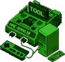

HB런처 — 게임을 켜기 직전에
게임 팩을 꽂기 전에 코어가 있는지 봅니다. 없으면 '코어 받는 중'을 보여 주며 받고, 다 받으면 그대로 시작합니다. 실행기를 바꾸면 미리 받아 두고, 인터넷이 없으면 해결 방법을 알려 줍니다.
필요한 코어를 해방툴과 HB런처가 알아서 확인하고, 없으면 받아서 바로 시작하는 안드로이드 RetroArch. 공식 RetroArch 옆에 나란히 설치됩니다.
공식 RetroArch 의 코어는 앱 안에 숨어 있어 다른 앱이 볼 수 없습니다. HB레트로아크는 '코어 브릿지'로 코어 목록을 보여 주고, 부탁받은 코어를 공식 서버에서 직접 받습니다.

해방툴 (PC)USB 로 내보내고 코어 점검게임을 눌렀는데 RetroArch 가 검은 화면으로 멈춘다면, 대부분 그 기종의 코어가 없어서입니다. 이제 그 일을 앱이 대신합니다.
어느 기종에 어느 코어가 필요한지 직접 알아야 합니다.
코어가 없으면 앱이 알아서 받고, 있으면 그냥 바로 시작합니다.
게임 팩을 꽂기 전에 코어가 있는지 봅니다. 없으면 '코어 받는 중'을 보여 주며 받고, 다 받으면 그대로 시작합니다. 실행기를 바꾸면 미리 받아 두고, 인터넷이 없으면 해결 방법을 알려 줍니다.
내보내기가 끝나면 보낸 게임들이 쓰는 코어 가운데 기기에 없는 것을 찾아 받을지 묻습니다 — [받기] 한 번이면 됩니다. PRO 기기 시트에서는 게임 설정마다 코어가 있는지 바로 보이고 그 자리에서 받습니다.
해방툴이 내보낼 때 ES-DE · Pegasus 가 공식판보다 HB레트로아크를 먼저 쓰도록 실행 규칙을 써 둡니다. 어느 프론트엔드로 실행해도 같은 코어를 씁니다.
GitHub 릴리스에서 HBRetroArch APK 를 받습니다. 64비트 · 32비트 기기 모두 APK 하나면 됩니다.
게임기에 설치한 뒤 한 번 열어 저장소 권한을 허용합니다. 공식 RetroArch 는 그대로 두어도 됩니다.
해방툴로 게임을 보내고 HB런처에서 게임을 고르세요. 코어는 두 앱이 알아서 챙깁니다.
아니요. 앱 이름(패키지)이 달라 나란히 깔립니다. 세이브 · 스테이트 · BIOS 폴더(/storage/emulated/0/RetroArch)는 함께 쓰고, 코어와 설정만 따로입니다.
게임기가 libretro 공식 코어 서버(buildbot)에서 https 로 직접 받습니다. 앱에는 코어가 들어 있지 않고, 필요한 것만 받습니다.
RetroArch 1.22.2 그대로(메뉴 · 코어 실행 · 설정이 같습니다)에 '코어 브릿지'만 더했습니다. libretro 팀과 관계없는 비공식 빌드이고, 소스는 GPLv3 로 공개합니다.
안드로이드 5.0 이상이면 됩니다. 64비트(arm64)와 32비트(armv7) 기기 모두 같은 APK 하나로 설치합니다.
해방툴 다음 베타(v1.1.5)와 HB런처 다음 업데이트부터 코어 확인 · 자동 받기가 들어갑니다. HB레트로아크는 지금 받아 일반 RetroArch 처럼 바로 쓸 수 있습니다.
GitHub 저장소의 Issues 나 홈 화면 맨 아래 문의 칸으로 알려 주세요. 인터넷이 없을 때는 해방툴(USB)로도 코어를 받을 수 있습니다.
GitHub 릴리스 페이지에서 최신 APK(HBRetroArch-….apk)를 받으세요. 무료이고, 첫 버전은 1.22.2-hb1 입니다.
비공식 RetroArch 빌드입니다(libretro 팀과 관계없음). RetroArch 는 libretro 의 상표입니다.